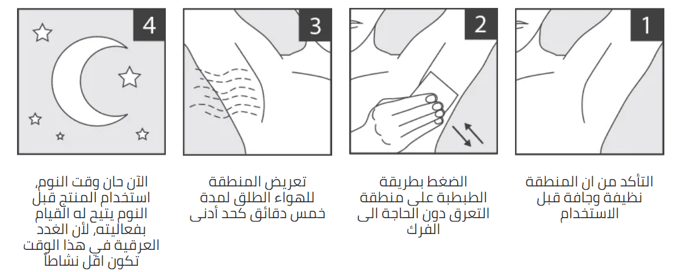

نتائج فعالة و بأقل تكلفة
علبة واحدة من سويت بلوك تتضمن 8 مسحات، و الواحدة لها قدرة التحكم بالعرق لمدة 7 ايام متواصلة
كونه خالي من الكحول ,حل مشاكل التعرق
مركب طبيعي مقاوم للفطريات و البكتيريا المسببة للروائح و اللتهاب الجلد.
منتج مختبر طبيا على معظم أنواع بشرة و من المنتجات القليلة في السوق ذات تركيبة فعالة مقارنة بالمنتجات التجارية
غالبية مزيلات التعرق التجارية تحتوي على نسب عالية من أملاح المعادن و الكحول و غيرها من المواد اللتي قد يكون التعرض لها بشكل يومي ضار على البشرة
لا يسد مسامات التعرق و انما يعمل على تضييق قنوات التعرق بحيث يتدفق العرق بشكل أقل
علبة واحدة من سويت بلوك تتضمن 8 مسحات، و الواحدة لها قدرة التحكم بالعرق لمدة 7 ايام متواصلة
مفعول يدوم اطول ولا يتأثر بالإستحمام اليومي
كريم بيو كلارو مزيل رائحه العرق هو سر ثقتك
مع كريم بيو كلارو مزيل رائحه العرق كيمكنك التحكم في مناطق التعرق و التي تدوم حتى ٧ أيام !
آمنة الإستخدام بنسبة ١٠٠٪ بفعالية عالية في السيطرة على التعرق وذلك بفضل تركيبة المنتج الخاصة والفريدة من المستخلصات العشبية
تعرق سن المراهقة
تعرق التوتر
التعرق المحرج في الفصول المدرسية والمحاضرات الجامعية
التعرق المحرج في غرفة الأجتماعات
التعرق المصاحب للطقس الحار والطقس الرطب
التعرق المرافق لسن اليأس
نعم فهو موصى من قبل الأطباء ومصرح من إدارة الغذاء و الدواء الأمريكية ومصرح ببيعه و إستخدامه في الأسواق العالمية و السوق الأمريكي منذ أكثر من 10 سنوات
نعم من الممكن استخدام أي رائحة عطريه أو معطر الجسم المفضل لديكم بكل اطمئنان مع ضمان استمرار فعالية المنتج
وجد بعض المستخدمين فعالية كبيرة من إستخدام كريم بيو كلارو في أماكن مختلفة لمن يعانون تعرق في منطقة الظهر والجبهة أو منطقة الصدر أو اليدين
لا و ذلك لأن جزء كبير من تركيبته عبارة عن ماء و مستخلصات نباتية كما أنه لا يحتوي على ألوان صناعية
الغالب هو رائحة القرنفل و بمجرد الإستحمام اليوم التالي تختفي الرائحة